軸はお笑い芸人。そこにゴルフ、東京ヤクルトスワローズ、教養・雑学、ゲーム実況が重なる。 よく観るチャンネルを、ジャンル別に。
いちばん観るのはお笑い芸人。 そこへゴルフとヤクルト、 ゆる系ラジオやゲーム実況の知的好奇心が 重なる、雑食の棚。
いちばん厚いジャンル。漫才師・コント師の公式チャンネルから、冠番組・ラジオ発・大会公式・局チャンネルまで。
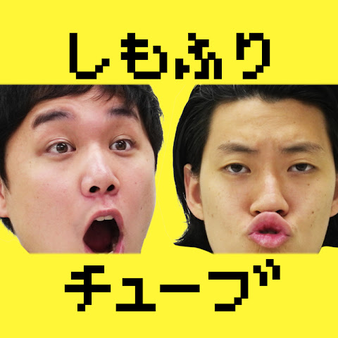
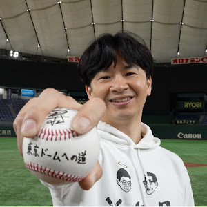
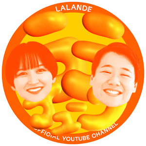
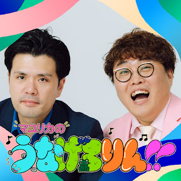
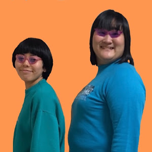
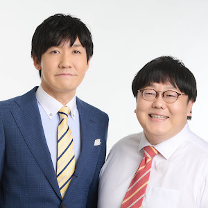
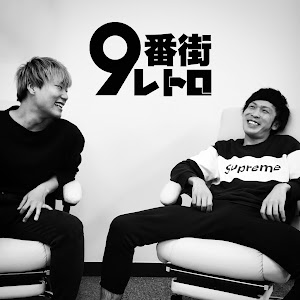
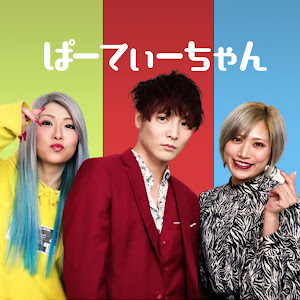
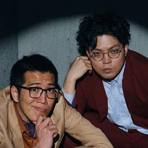
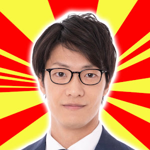
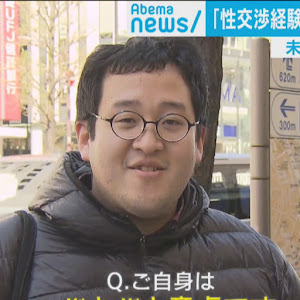
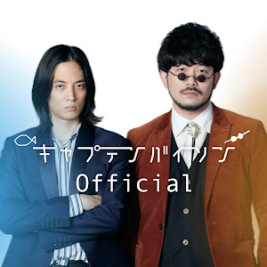
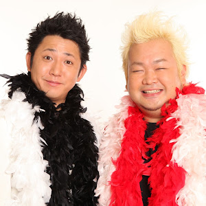
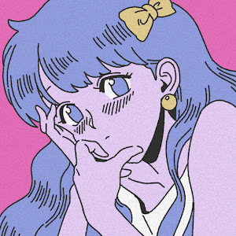
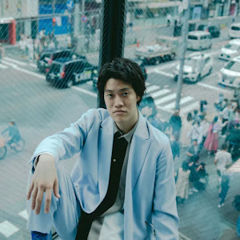
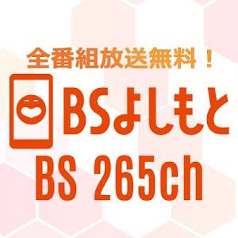
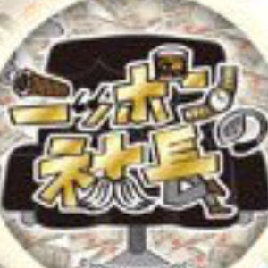
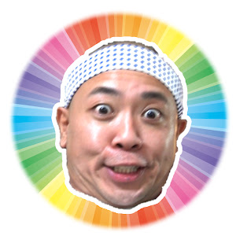
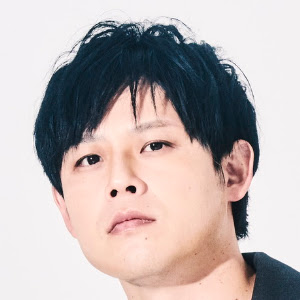
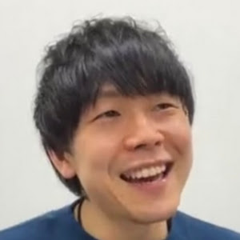
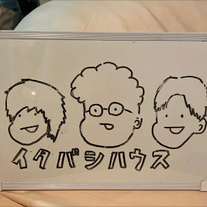
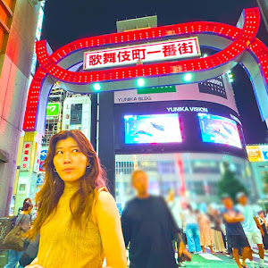
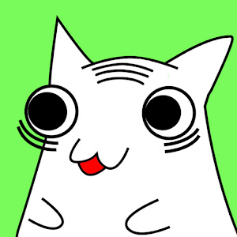
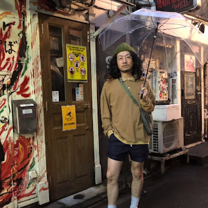
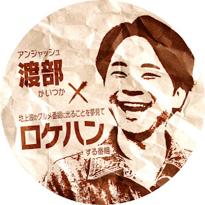
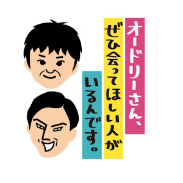
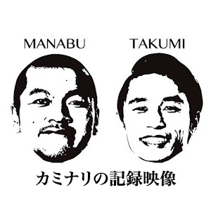
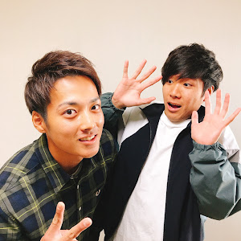
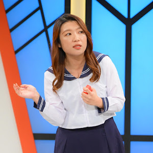
レッスン系の登録が多く、自分でもプレーする趣味の顔。プロのラウンドから100切り企画まで、実用と観戦の両取り。
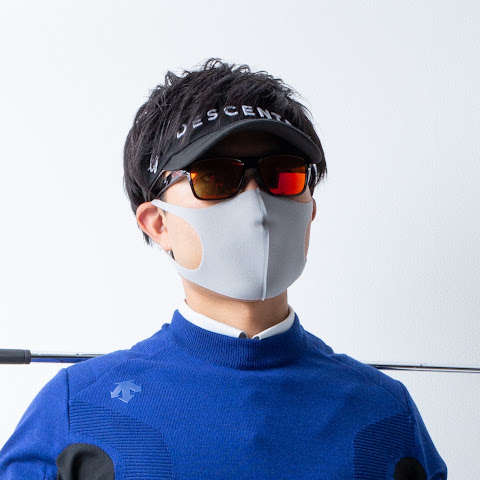
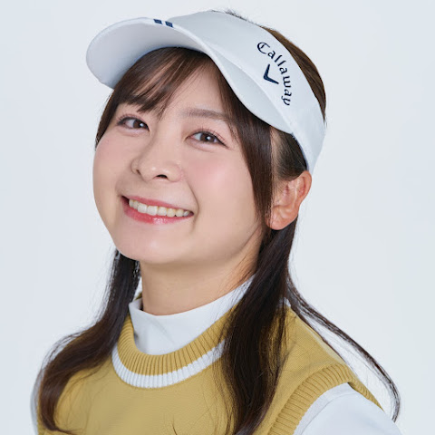
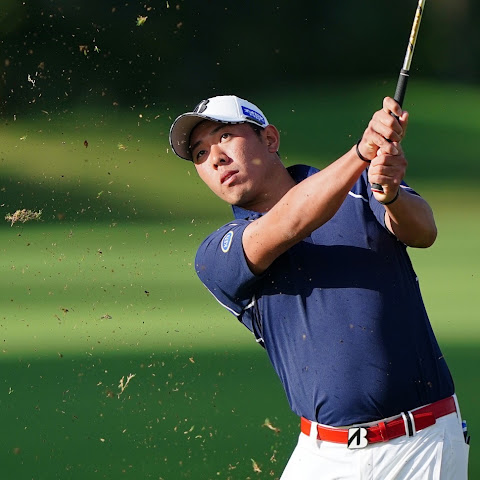
登録チャンネルはヤクルト一色。球団公式から応燕（応援）配信、選手個人チャンネルまで。推し球団がはっきり出るジャンル。
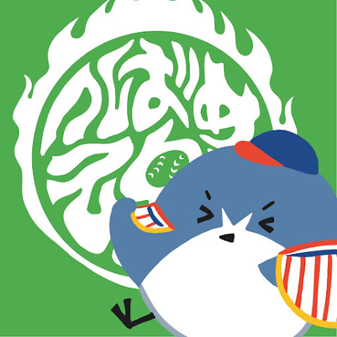
知的好奇心の受け皿。ゆる系トークから美術・統計まで、「構造化＋根拠」で世の中を面白がる解説系が並ぶ。
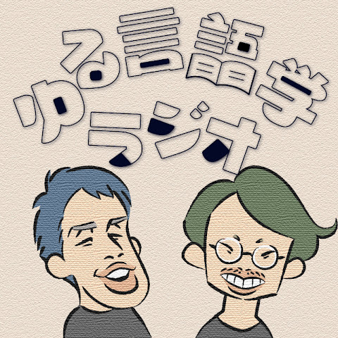
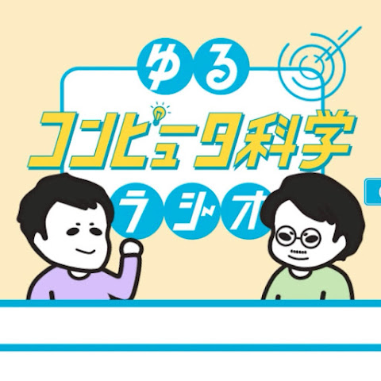
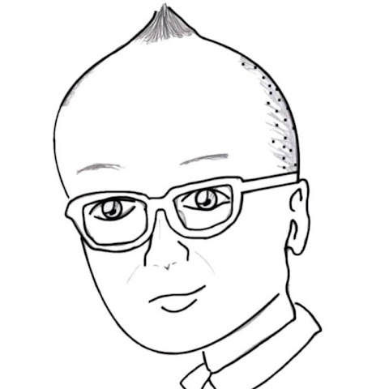
老舗の実況者から、タイムアタックの祭典、専門家と歩く教養系まで。ゲームを“観る”文化をしっかり押さえる。
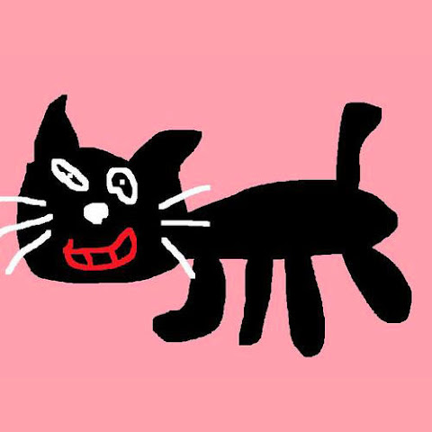
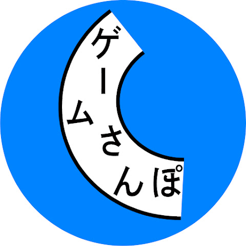
ジャンルの並びに出ている、YouTubeとの付き合い方。
※ カードのアイコンは各公式チャンネルの画像で、権利は各配信者に帰属します。